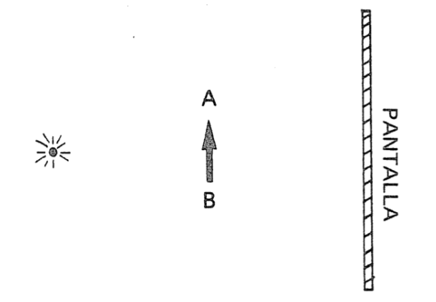
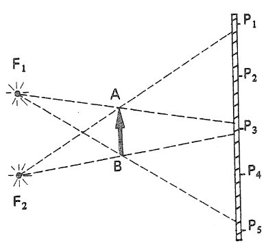
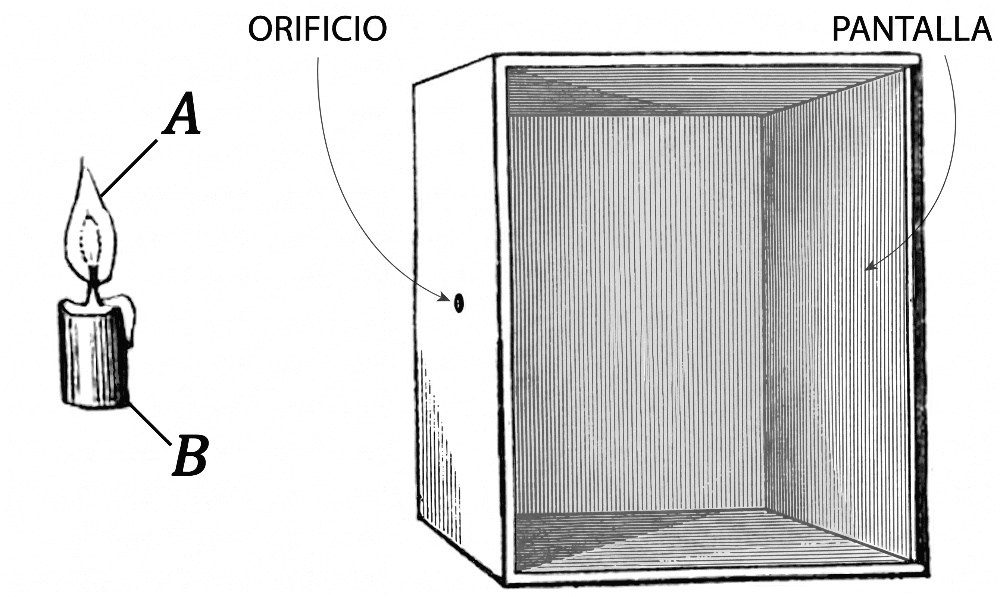
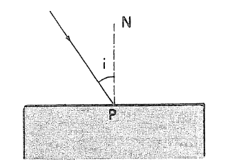
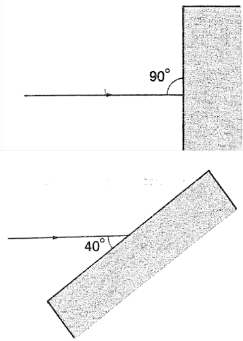
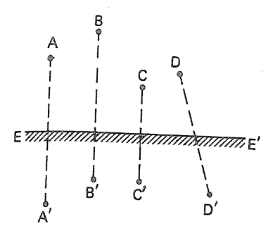
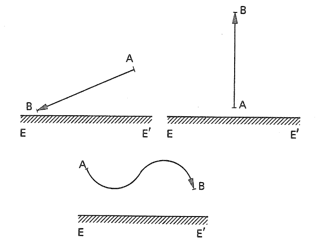
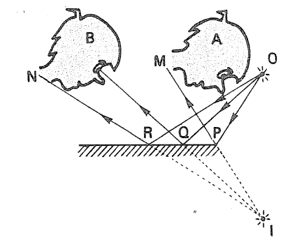

¿Es correcto afirmar que la Luna es una fuente de luz?
Entonces, ¿cómo es que podemos observarla?
La figura de este ejercicio muestra un objeto AB, colocado frente a una pequeña lámpara encendida. Detrás del objeto hay una pantalla opaca, situada paralelamente a AB.
Trace en la figura la sombra A′B′ del objeto, proyectada sobre la pantalla.
Indique la región del espacio que queda a oscuras, es decir, la zona que no recibe luz de la fuente.
Si el objeto se acercara a la fuente de luz, ¿cómo cambiaría el tamaño de su sombra? (aumenta, disminuye o permanece igual). Justifique con un diagrama.

En el ejercicio anterior, suponga que el objeto permanece en la posición mostrada, pero que la fuente de luz se aleja considerablemente. En estas condiciones:
¿Cómo es el haz de rayos luminosos que llega al objeto?
Dibuje la sombra sobre la pantalla. ¿Es mayor, menor o igual que el objeto?
Dos pequeñas fuentes luminosas, F1 y F2, iluminan un objeto opaco AB. Considerando la propagación rectilínea de la luz, responda:
¿Qué puntos reciben luz de ambas fuentes?
¿Qué puntos reciben luz solo de F₁?
¿Qué puntos reciben luz solo de F₂?
¿Qué puntos no reciben luz de ninguna fuente?

Una cámara oscura consiste en una caja cerrada con un pequeño orificio. Al colocar un objeto luminoso (por ejemplo, una vela), se forma una imagen en la pared opuesta.
Trace los rayos de luz desde los extremos de la vela que pasan por el orificio hasta la pantalla.
Relacione el tamaño del orificio con la formación de penumbra. Justifique con un esquema para un orificio mayor.

La figura muestra un rayo de luz que incide en una superficie reflejante (NP es la normal).
Trace el rayo reflejado.
Indique el ángulo de reflexión r̂.
Si î = 32°, ¿cuánto vale r̂?

Considere un rayo que incide sobre distintas superficies reflejantes:
Trace la normal en el punto de incidencia.
Determine el ángulo de incidencia.
Determine el ángulo de reflexión.
Trace el rayo reflejado.

Una persona está a 2 m de un espejo plano. ¿Cuál es la distancia entre la persona y su imagen?
Si se acerca al espejo, ¿cambia el tamaño de la imagen?
La figura muestra un espejo plano EE′ y varios pares de puntos. Indique cuáles representan un objeto y su imagen.

Trace la imagen A′B′ del objeto AB en el espejo plano EE′.

Explique por qué el observador A no ve la imagen I del objeto O.
